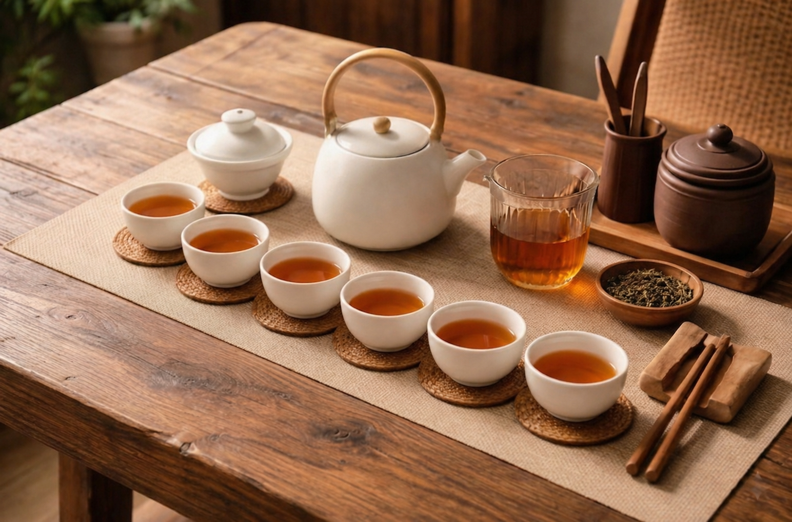
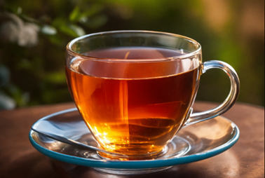
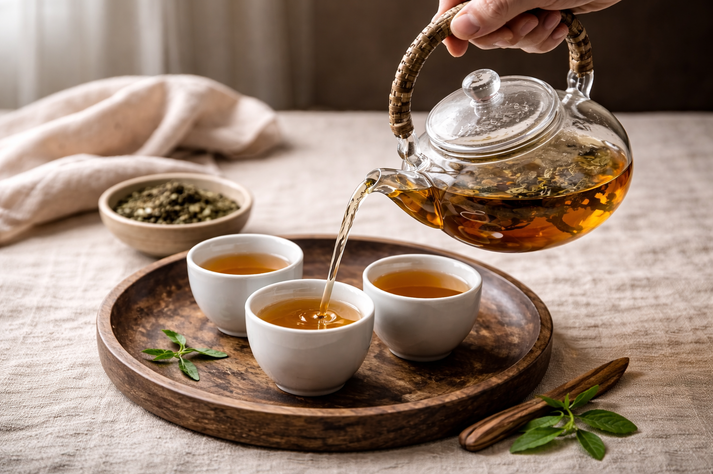
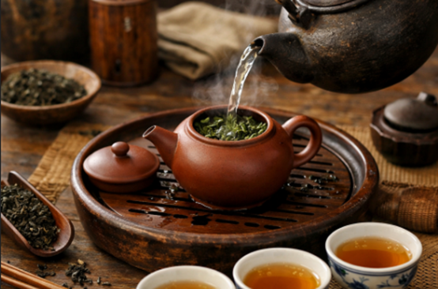
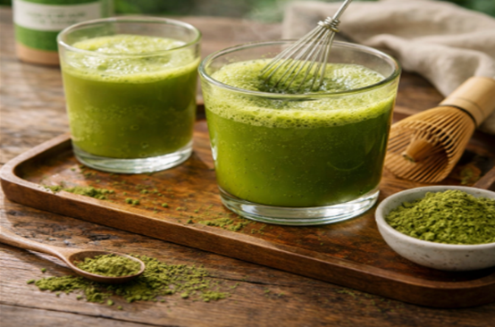
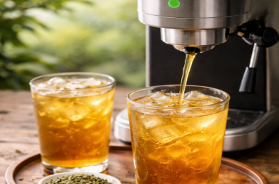

茶湯沖煮學習網站

茶不僅是一種日常飲品，更是一項融合文化、歷史與科學的知識領域。 本網站將帶領讀者從茶的起源與發展開始，逐步認識不同茶類的特色，同時了解正確的沖泡方式與品飲技巧， 讓每個人都能更深入體驗茶的魅力。

紅茶屬於完全發酵茶，經完整氧化後形成紅褐色茶湯與深色茶葉。 其風味濃厚醇香，常帶有果香或蜜香，口感圓潤順滑。相較於其他茶類，紅茶咖啡因含量較高，因此常被作為提神飲品，適合日常飲用。
綠茶屬於未發酵茶，採摘嫩葉後以蒸氣或熱風處理，保留茶葉的天然成分與鮮綠色澤。 其茶湯清新爽口，帶有自然草香與淡雅清甜。相較於其他茶類，綠茶富含多酚與兒茶素等抗氧化物質，風味清雅純淨。
烏龍茶屬於半發酵茶，介於綠茶與紅茶之間。經過適度發酵與多道製程，使茶湯比綠茶更醇厚，卻不如紅茶濃烈。 其香氣多變，常帶有花香、果香或淡淡焙火香。依發酵程度不同，可分為輕發酵與重發酵，風味與口感各具特色。
茶起源於中國，已有數千年的歷史，相傳最早由神農氏於西元前 2737 年偶然發現，最初被視為藥用植物，後逐漸發展為日常飲品。 漢代開始出現飲茶風氣，唐代時茶文化蓬勃發展， 陸羽所著《茶經》奠定了茶在文化與生活中的重要地位；宋代講究點茶與品評， 使飲茶更具藝術性；明代則改以沖泡散茶為主 ，形成現代泡茶方式的基礎。隨著絲綢之路與海上貿易的發展，茶逐漸傳入日本、韓國、東南亞及歐洲， 並在各地發展出不同的飲茶文化， 其中英國的下午茶文化尤為著名。臺灣自十九世紀起開始發展茶業，憑藉適合的氣候與地形條件， 孕育出烏龍茶、包種茶與高山茶等具代表性的茶類， 並在國際上享有盛名。時至今日，茶不僅是一種飲品，更結合了文化傳承、生活美學與健康價值， 成為全球廣泛流行的重要飲食文化之一。

清爽、健康、自然取向
層次、品質、品味象徵
同樣的茶葉，換一種沖泡方式，就能帶出截然不同的味道與個性； 從傳統熱泡、冷泡、茶粉沖泡再到高壓萃取，每一種方式都讓品茶變得更有趣。

先用熱水將茶壺和茶杯溫熱，讓茶具保持適合的溫度。接著將茶葉放入茶壺中，一般約 5–8 克，視茶種而定。 慢慢沿壺邊注入熱水，水溫依茶種調整：綠茶約 80°C、烏龍茶約 90°C、紅茶約 95°C。 茶葉浸泡時間也依茶種不同，綠茶約 1–2 分鐘、烏龍茶約 2–3 分鐘、紅茶約 3–5 分鐘。 浸泡完成後將茶湯倒入茶杯，即可品飲。優質茶葉可多次沖泡，每次茶味會略有不同，並可在泡茶過程中聞香， 享受茶的層次感。
將茶葉放入冷水中浸泡的泡茶方法，能讓茶湯更加清爽、柔和。 首先取5-8克茶葉（根據茶種可調整），放入乾淨的茶壺或玻璃瓶中。 然後加入冰水或常溫水，水量需根據茶葉量來調整，確保茶葉能完全浸泡。 蓋好容器後，將茶放入冰箱冷藏浸泡約6至12小時，綠茶可以泡較短時間，烏龍茶和紅茶則可泡久一些。 經過冷藏後，茶湯會變得清香怡人，輕輕倒出後即可以品飲。冷泡茶的口感特別清新，茶味柔和且不苦澀， 而且可以多次續泡，每次茶香會有些微不同。

茶葉研磨成細粉後，與熱水混合的泡茶方式。 首先取1-2克茶粉（根據茶種可調整），放入茶杯或茶壺中。 接著加入少量熱水（60-80°C），輕輕攪拌均勻，直到形成茶糊。 這樣可以幫助茶葉的香氣和味道更好地釋放。然後慢慢加入剩餘熱水，攪拌均勻後，即可飲用。 若想口感更加順滑，可以使用茶刷或攪拌器細緻攪拌，這樣茶湯會更加細膩、濃郁，口感更佳。 這種沖泡方式能有效保留茶葉的營養成分和風味，使茶湯更有層次感。

這是一種使用高壓熱水快速萃取茶香與茶味的泡茶方法。 首先將茶葉放入專用的高壓萃取設備或茶膠囊容器中，使用約90-95°C的高壓熱水（壓力約8-10巴）。 這樣的高壓能迅速將茶葉中的香氣和味道萃取出來，通常30秒到1分鐘就能完成。 常見設備包括家用或商用高壓茶機、咖啡膠囊機和商用自動萃茶機，這些設備能精確控制水溫和壓力， 使茶湯更加濃郁，香氣飽滿且層次分明。這種方法適合追求快速、方便且保留茶香的使用者， 能在短時間內享受高品質的茶湯。
選擇茶種，我們幫你精準掌控黃金沖泡時間!